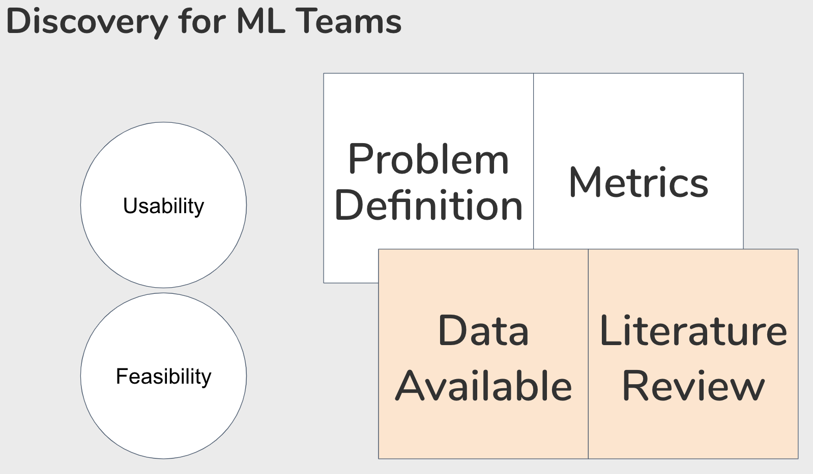
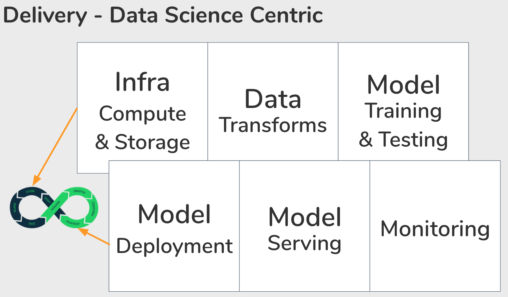

Anatomy of Machine Learning Projects

Last year, I gave a talk titled “The Anatomy of Machine Learning Teamwork” at BigData/AI Toronto and the Vector Institute. Leading teams is contextual, and this post is specific to managing an applied research team with a focus on natural language processing, particularly within the application of fictional stories. Our successes included creating a novel and monetizable product offering which delighted users. Asides for commercializing our research, the team published a paper, accepted at EMNLP 2019. This post covers how the team is organized, and collaborate together. Part 1 covers team composition.
Two Questions
As a team, we face these questions repeatedly:
-
Will users find value in it? Nobody wants to waste time building something that nobody will use or find value in.
-
Is it possible to build? Software projects can be risky, and there are plenty of things that are possible, but hard under tight constraints. When you introduce machine learning into this mix, some things are not only hard, but impossible. There is a tonne of excitement right now of what AI/ML/DL can do, but we need to separate reality from hype.
Dual Track Agile provides a framework for two phases: discovery and delivery. The team generally participates in both tracks. In the discovery phase, we are trying to learn what users value. In the delivery phase, we are optimizing for scale and quality.
Discovery for ML Teams

This mental model provides a baseline for all teams, regardless if they have data practitioners on them or not, as they share many characteristics. Take for example, in any situation we always start with a problem. As we understand the problem better, we can also devise goals and metrics to target. The outcome of the discovery phase involves taking a series of divergent discoveries that converge into iterable solutions that keep usability and feasibility in mind. After we deploy the new or enhanced feature to the user, the discovery track will take new learnings from the delivery phase.
A major differentiator to how machine learning teams will differ from traditional software teams is the need to thoroughly examine the data available, as well as go through a literature review of existing solutions. These are skills that uniquely your data scientists (and engineers) will bring to your ML teams. Over time, you might find that as you’re years into the ML journey that you’re starting to exhaust your sources of data – discovery is also a good time to identify what new sources of data you might want to design into your product, or to acquire through other means.
Delivery for ML Teams
The delivery phase follows a similar lifecycle as traditional software. At this point, your team has identified a need to address, and have decided the measure of success. They have an educated guess that the solution they’ve come up with, is both deliverable within a foreseeable timeline as well as a best guess on the impact it’ll make. With a plan in hand, your team starts coding, building, and testing a solution. Assuming you were able to develop a model that fits, then you deploy, scale, and monitor your solution in production.

I am going to zoom into how delivery differs when you have data scientists at your company. Data scientists across the industry will have varying levels of scope. The joy of working at a smaller organization (in my opinion) is being able to take ownership of the end-to-end lifecycle of your work. In this case, our data scientists pick an environment they want to prototype in. This will depend on how data and compute hungry the model is. Afterwards, data scientists take time back and forth to cleanse, transform, aggregate data into useful signals for their model. Whilst taking a variety of approaches, and evaluating them based on the metrics you decided on in discovery. One of the hardest things to accept about the nature of data science work is that it is risky, and the possibility of failing is very real. The important thing here to be able to identify when to cut your losses, and be courageous to end it. With every failure, you need to conduct an error analysis so that you can try to at least understand how and why it failed. This is a crucial step else your organization is not going to be able to build upon its learnings, and develop an intuition for what might work (or not) moving forwards. Many failed attempts later, you might find one that we’re satisfied with. Or conclude that there are diminishing returns for your effort. Or that it is not possible to push the performance of your model any further at the current moment. But if you are so lucky to make it out of the development phase, you can finally start thinking about deploying this model into production, periodically re-training your model, serving, and continuous monitoring the performance of your model to detect any shifts in the distribution of data you’re expecting.
Explore more like this

 Never miss a story from me, subscribe to my newsletter
Never miss a story from me, subscribe to my newsletter
Comments